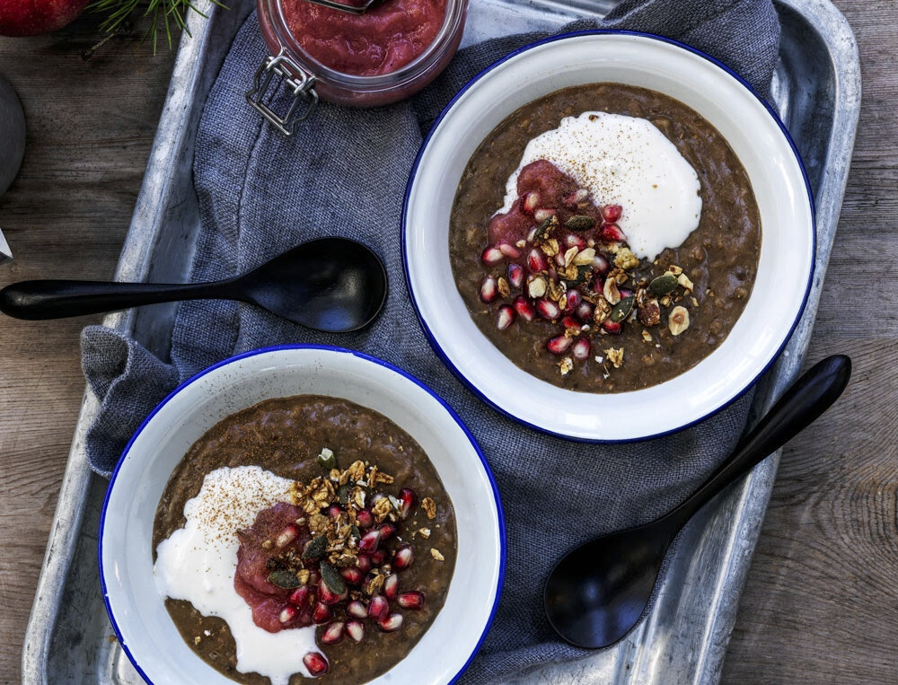

Øllebrød is a traditional Danish rye bread porridge that is usually served as a sweet and nutritious breakfast. It consists of a mixture of stale rye bread soaked in water, milk, or traditional Danish beer, which is later cooked until it achieves a thick, homogenous texture.
Meal prep time : 25 minutes
Servings : 4